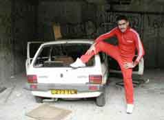

For those of you that had forgotten about the mix-master spin-maven known as supergreg, I've been asked to link to him (again).
He fucking rules btw.

Among all the great new things happening in energy, there has also been a very sad event these recent days.
Our very good friend arthur (former b:octa), has decided to part with energy. All of us have tried our best to convince him not to leave, but unfortunately without success.
Arthur, you know we <3 you :)
It goes without saying that if you ever change your mind, that there always will be a home for you in energy.
/me get's all warm and fuzzy inside...
...see you in IRC... :)
Well as you know energy is only a few days old, but that hasn't stopped us to keep our eyes open for new talent.
e.flesh and e.Noccy are both solid players with solid attitudes, and should therefore be a great addition to our team.
On another note I would like to ask all of you people looking to join our ranks to be a bit more patient with us. Our roster is very full the way it is, and as we haven't even had the chance to really get to know each other yet, we are hesitent about bringing in even more people at the timebeing.
SO if you really think you can contribute to our team, then by all means ask one of the energy members for a try-out, just don't expect to get one the very next day.
Anyhow...all welcome flesh and Noccy aboard!
<3 to all :)
nate / acid*r3verend / b:m4d_3w0k / b:r3verend just saw the roster page and cried that he wasn't on it.
he hasn't played in about half a year (for us or anyone else) and is condemned to 56K land, but i've just gotta add him as a mascot of some sort.
I mean.
The guy just quit smoking.
You've got to walk on egg shells around quitters ya know?
Team Euphoria and plan:b have merged to form "energy".
This has been a big step forward for both clans. We all had been struggling after a harsh winter break, which cut the size of our roster in half. Although we all will miss plan:b terribly, we believe that we have found a like-minded set of gamers, who should soon become our friends and trusted teammates.
Together we now have a roster stronger then ever before, and will finally be able to scrim and intra on a regular basis - something both clans were not able to do individually for a very long time.
For all of you who were loyal friends and buddies, we invite you to share our excitement and join us on ETG in #energy.
Our new roster should look something like the following:
e.ben
e.grant
e.agamemnon
e.fuct
e.freestyle
e.flood
e.stereotype
e.gladiac
e.thrash
e.monty
e.xtasy
e.octa
e.tgm2001
I am sure I have forgotten the one or other player, but all the new names and the fact that this merger is only 2-3 hours young, are just too confusing :)))
Love to all who supported plan:b over the past year, and we hope to see you soon in #energy.
We had a great time and the memories will be with us for a long time.
<3
I managed to toss Jokerbone some nude pics of r3verend, so he'll be out of commission for a bit. Why such a risky ploy? Why force this pain on such a sweet soul? To bring you octa's monthly update of course!
(b|Agamemnon: but octa you've only been with us for a month... ; *b|octa kicks b|Agamemnon in the face)
*Ahem* like I was saying, time for another monthly update from your favorite ocat.
It's official, plan:b will be at Badlands! *cough*tier 4*cough*. I believe almost everyone is pairing up so phear the sting of the "b"(pun)!
On the scrim side of things plan:b hasn't been doing that bad. We've got some really active players duking it up with the best from trt, stx, and even clan wang! And we beat all their asses! muwahahha
(b|thrash:actually octa we didnt wi... ; *b|octa lights b|thrash on fire)
*cough* With the return of Monty(were not worthy) to our ranks we seem to be alot more livelier, our scrims are getting organized and its just a better feeling all around. (Monty promised me booby squeezes to say that btw, <3 =P)
On another note some of us "bees" have been drawn to the darkside of q3 mods, namely...CPM. I don't know what it is about this mod, it's just so damn cool.
Joker is regaining conciousnes so I better cut this short. Basically just want to congratulate Sceptre on making it into that über cool($$) clan House of Shadows and Happy B-day to Kruddles!
I managed to spam the front page again. I doubt Joker will notice, he's so busy with his pussies these days(muwahaha). See you next month...unless I find myself beaten senseless and thrown into a ditch.
ShorteeB21: Let's go bowling |
|
3:07pm |[b|grant|class] k. booty, hump evan!
* b|ooty humps b|grant|class
Well, it's out. alpha2 at least. What else do you need to know?
saw a new css trick i just had to rip off today - hence the new look to the type on the site.. might actually start working on this site again if our quasi-activity continues <3
a redesign did you say?
you don't like #000000, #FFFFFF, #606060, and #00B2EB?
time will tell...
I just got back from a lan party in Akron Ohio, hosted by ss-shaka and attended by some surprisingly good players. In the one on one tourney, I got 8th place out of 20 or so contenders. I was playing very poorly but it was still a nice oportunity for some zero ping action and a chance to hang (and stay with) shadow'mayoke and friends in the Cleveland area. Ultimo beat ss-elwood for the first place prize in a very very tense dm6 match that had us all holding our breath. The free Bawls gave me the shakes but it was a great lan and well organised by shaka. The 7 hour drive one-way made the commute almost as long as the lan itself but it was worth the trouble :)
I'll update this post when the lan's website comes back online with stats and info.
Those crazy guys at House Of Shadows were kind enough to let me in on their scrim with 9L tonight(they just wanted to point and laugh =P). By the way if any 9L guys are reading this, any boasting of Shadows' skills are purely due to the fact that they pay me for each instance.
Now I dabble in CTF once in awhile, but the extent of my strategy knowledge is basically "don't get in the flag carriers way, newbie!". So I was given the proud, manly, superÜber position of...Flag Defence. YEAH BABY! I seriously do not care what position I play as long as I get to play. However, it should be noted that the position sucks ass; especially with a super l33t($$)squad like the Shadows. So thank god my sorry ass did not have to do anything since those super great($$) Shadows were there to mop up and chop up.
What a hectic game! I basically placed myself in front of the flag and acted like a human shield. After realizing my bio shield of terror was'nt doing the trick I then went on to plan: b(pun), lagged-rail of super annihalation!. This difficult, complicated maneuver is made up of me and my 135 ping snatching up a rail and trying to miss as much as possible to throw off the enemy's concentration, making it easier for my awesome($$) Shadow team mates to bludgeon the confused enemy to death. Its a tough job, but someone has to do it. And I am sure that the strategy played a key role in the 13-0 sweep that those bodacious($$) Shadow guys ran.
I was going to go into detail about my various killer strategies on the next map(ctf2), Joker's favourite map btw(9L:ask for this map as much as possible, they love it). However, Joker said if I post anymore boring dribble he would shoot my nads off. So basically those dope($$) Shadow guys with serious wangage from Jokerbone(69 frags??) went on to win 5-3. Well thats my recap, a potpouri of heartbreak and cheers. Jokerbone is giving me a strange look, I think hes going to kick my ass for spamming the front page. doh!
All demos and screenshots can be found at kruthles.dhs.org, hosted by my bi0tch Kruddles of the supa dupa($$) Shadows clan.
·+shadow`mayoke· aw
·+shadow`mayoke· ooty is a dumbass :(
·+b|ooty· No, shadow`mayoke, you are
·+toad· oh yeah bitch
·+shadow`mayoke· stfu toad
·+toad· bite me
-------------------------------------
* +b|ooty0 smacks b|r3verend
* +b|ooty smacks b|r3verend
* +b|ooty smacks b|ooty0
Strider has posted a thread on xsreality announcing the release of his demo converter. As many of you know, playing 1.17 demos ine 1.27 has been impossible thus far - now good old demo001 is back for anyone doing timedemos. Apparently people are getting all sorts of strange fps losses or gains - i went from 89.6 to 75.8 :( but if fps + jumping aren't -as- linked anymore, I think I can deal.
The converter exe will be released tonight but in the meantime, go there to grab his 127 demo001 :)
Just wanted to say wazzuuuu! jokerbone is actually giving me a chance to make an ass out of myself =) . I am on irc quite a bit and icq is on most of the time. I am always up for a game(ass whooping)so hit me up sometime. Message from joker: House of Shadow's owned. =D <3
Well, i broke down and added a second q3 install for 1.27g + TA.
A lot of people have bitched about a lot of things but no one I've talked to has actually -told- me anything about it, so here's the dirt for the rest of you:
I have a voodoo3 3000 and playing quake on it makes me want to cut my own nuts off. 1.27g actually smooths things out very very nicely. <3 I could rant about how a tournament quality game should have been able to do this by the third test release, not the first major mission pack a year-post-release but I know quakers and bitching about iD is like Eric Clapton on a classic rock radio station: everyone has heard it a zillion times.
other new items: New sounds. a -lot- of new sounds. :( MG bullets now make *zing* *ka-pow* *blam!* etc noises when hitting a wall. This is interesting in that it makes battles louder when approaching from another room -but- it masks some jump noises footsteps that we've all subconciously learned to pay careful attention to during duelz and it's pretty disconcerting. The rail gun reload sound is new (and annoying). Try getting quad! that quad noise that rings when you fire is much much louder now.. stupid and newbie imo - there's no reason to put the quad carrier at a disadvantage when it is such a key factor in tdm/ctf - the heightened damage is already self-applicable - why shit on the quad carrier any more? Rockets now make zinging noises when they come "too close" in addition to the actual rocket noise they've always made. This is also gheyed and newbie and dissapointing.
Conclusion - there are other changes that have been noted on tons of pages but these are the first things that hit me... :) Give it a try, it'll be standard soon :/
planbq3.dhs.org has been up and running on a Windows 98 box for almost a month now with no problems! (omfsj(sweet jesus)) !!
Rumor has it that it has replaced TP.net as a bastion of our much beloved 1.17 (the bandwidth helps too). I only ask that any clans that use this as a practice server help us out in any way they think appropriate.. idlingin #plan_b.. refering recruits.. monetary donations..
update: Evan is back on the machine so the server is gone :( It should be noted that he somehow managed to crank quite a good uptime out of good ol' win98SE.
·@ricecake· (Operating System) Platform:(Windows 98) UpTime:(5 Weeks 2 Days 2 Hours 41 Minutes 39 Seconds)
amazing
While not the first casualty of our innactivity, it is with a sad tone that I must announce the resignation of our relatively new b:fled. We've known him for quite some time regardless of his short time in plan:b but that rat bastard we all know as 'RL' has taken him from us. Formally, we all (erm.. bryan and I) erm.. well... gg's, cya in irc.
<3
ha ha.
"news"
School let out and half of plan:b went home to their parents' dialup accounts. There are still some b's left and we have our fingers crossed that we can hold it together long enough for janruary to swing around for our core players to return. In the meantime, any players "needing one more" for tdm scrims, DoS attacks, or circle-jerks, are invited to #plan_b.
It was a fun first semester. Pity it went by so fast
:(
:(
·WarningServ· You Have Reached The Max # Of 3 Connections(Clones) Allowed On ETG From An Ip Address, Please Load No More. If You Are On A LAN You May Ask Permission In #ETG From An Admin To Have More Then This.
[ WHOIS ] WarningServ (Warning@Services.EnterTheGame.Com)
[NAME] ETG Channel Services 4.1
[ORIGIN] Commercial (United States)
[SERVER] Services.EnterTheGame.Com EnterTheGame IRC Services 4.1
[IRC OPERATOR] WarningServ is an IRC Operator
[ End Whois ]
{kind=link}